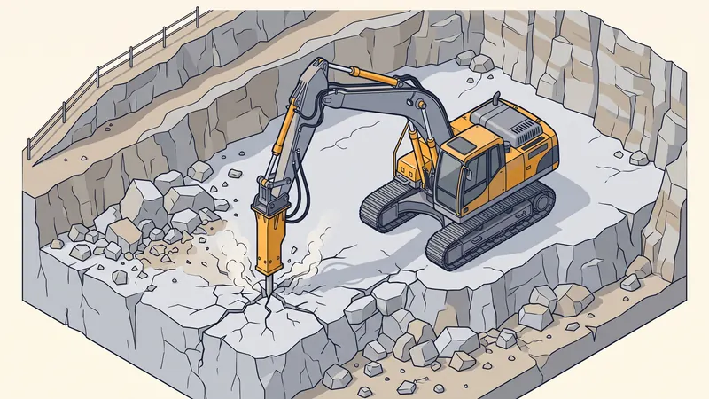

Prix du Terrassement en Sol Rocheux en 2026 : BRH, Calcaire et Surcoûts
Le terrassement en sol rocheux coûte de 50 à 90 €/m³ en 2026, contre 25 à 40 €/m³ en terre meuble. Dans les Bouches-du-Rhône, la question n'est pas théorique : entre le calcaire du massif de l'Étoile au-dessus de Simiane-Collongue, les bancs rocheux des coteaux d'Aix-en-Provence et les collines marseillaises, un chantier sur trois rencontre la roche. Ce guide explique d'où vient le surcoût, quelles techniques l'encadrent (brise-roche hydraulique, ripper, éclateur) et comment le limiter avant de signer.
Prix du terrassement rocheux : l'essentiel en un tableau
Fourchettes hors taxes, chantier accessible à une pelle de 8 t ou plus, évacuation non comprise. Elles sont cohérentes avec notre grille des tarifs 2026 et avec les guides spécialisés cités.
| Type de sol ou prestation | Prix 2026 (HT) | Rendement indicatif | Guide lié |
|---|---|---|---|
| Terre végétale, sol meuble | 25 – 40 €/m³ | 30 à 40 m³/h | Prix terrassement au m² |
| Sol argileux ou caillouteux | 35 – 45 €/m³ | 15 à 25 m³/h | Prix terrassement au m² |
| Calcaire altéré, rippable | 45 – 60 €/m³ | 10 à 15 m³/h | Terrassement sous-sol |
| Calcaire compact au brise-roche (BRH) | 50 – 75 €/m³ | 5 à 10 m³/h | Terrassement sous-sol |
| Roche massive, gros BRH | 70 – 90 €/m³ | 3 à 6 m³/h | Prix terrassement au m² |
| Tranchée 0,80 m en sol rocheux | 38 – 50 €/ml | 8 à 12 ml/h | Prix tranchée au ml |
| Tractopelle équipé BRH avec chauffeur | 80 – 110 €/h | petits volumes | Location tractopelle |
| Évacuation de blocs rocheux, moins de 10 km | 8 – 12 €/m³ | foisonnement 1,5 à 1,7 | Évacuation gravats |

Pourquoi la roche coûte deux à trois fois plus cher
Le prix d'un terrassement, c'est un coût horaire d'engin et de chauffeur divisé par un rendement. En terre meuble, une pelle de 14 t charge un camion de 10 m³ en un quart d'heure. Dans un banc de calcaire compact, la même pelle doit d'abord fragmenter la roche au brise-roche hydraulique, puis changer d'outil pour charger. Le rendement tombe de 30 m³/h à 5 m³/h : à coût horaire égal, le m³ coûte six fois plus à produire, ce que le marché lisse à un facteur deux ou trois grâce à des engins plus lourds.
Trois autres postes s'ajoutent. L'usure : un pic de BRH et les dents de godet s'usent dix fois plus vite dans le calcaire. L'évacuation : la roche foisonne à 1,5 ou 1,7 contre 1,25 pour la terre, donc plus de rotations de camions pour le même volume en place. La non-réutilisation : des blocs de 40 cm ne se remettent pas en remblai sous une dalle sans concassage préalable.
Les sols de Provence : calcaire, marne et safre
Le pays d'Aix et le bassin marseillais reposent majoritairement sur des calcaires du Jurassique et du Crétacé, affleurants sur les reliefs (Étoile, Sainte-Victoire, Régagnas) et recouverts d'une couche variable de colluvions dans les vallons. Entre les deux, on rencontre des marnes tendres, faciles à excaver mais sensibles à l'eau, et du safre, ce sable consolidé typique des collines d'Aix, qui se terrasse à la dent mais se délite au gel.
Concrètement, à Simiane-Collongue, Bouc-Bel-Air ou sur les hauteurs de Gardanne, la roche apparaît souvent entre 40 cm et 1,20 m de profondeur : suffisant pour une dalle, pas pour une piscine ni un sous-sol. À Marseille, les quartiers de collines (Saint-Barnabé, la Treille, Château-Gombert) sont les plus concernés, comme le rappelle notre page sur le terrassement à Marseille.

Les techniques de terrassement en roche
Le ripper (dent de déroctage)
Une dent unique montée sur la pelle qui arrache la roche fissurée ou altérée. C'est la solution la moins chère (45 à 60 €/m³) quand le calcaire est stratifié en bancs minces. Le chauffeur juge en quelques minutes si le ripper suffit ou si le BRH s'impose.
Le brise-roche hydraulique (BRH)
Un marteau de 300 à 2 000 kg alimenté par l'hydraulique de la pelle. Il fragmente le rocher en blocs manipulables. Selon la puissance et la dureté, comptez 50 à 90 €/m³. C'est l'outil de référence des fouilles de piscine et de sous-sol en Provence, mais il est bruyant : les arrêtés municipaux limitent souvent son usage à 8 h – 19 h en semaine.
L'éclateur hydraulique et le ciment expansif
Quand le BRH est interdit (mitoyenneté, bâti ancien fragile), on fore la roche et on la fend avec un vérin éclateur ou un coulis expansif. Silencieux et sans vibration, mais deux à trois fois plus coûteux que le BRH, à réserver aux volumes réduits.
Le sciage et le minage
La scie à disque diamanté découpe proprement des parois verticales (tranchées en ville). Le minage à l'explosif, réservé aux très gros volumes hors zone habitée, ne concerne pratiquement jamais un chantier de particulier.
Trois exemples chiffrés en sol rocheux
Estimations construites avec les fourchettes de ce guide, hors TVA, pour un chantier accessible. Elles servent de repère avant la visite, qui reste indispensable.
Piscine 8x4 m sur un coteau calcaire d'Aix-en-Provence
Volume excavé d'environ 60 m³, dont 20 m³ de terre et 40 m³ de calcaire compact. Terre : 20 x 30 € = 600 €. Roche au BRH : 40 x 65 € = 2 600 €. Évacuation de 90 m³ foisonnés : 900 €. Total : environ 4 100 €, contre 2 000 à 2 500 € pour le même bassin en sol meuble. Notre guide du prix du terrassement de piscine par dimension détaille les autres tailles.
Sous-sol de 60 m² à Simiane-Collongue
Fouille de 2,5 m de profondeur, soit 150 m³ en place, avec la roche à partir de 1 m : 60 m³ de terre (1 800 €) et 90 m³ de calcaire (5 400 à 6 750 €), évacuation de 240 m³ foisonnés (2 400 €). Total : 9 600 à 11 000 €. Le détail des postes suivants (soutènement, drainage) est dans le guide du terrassement de sous-sol.
Tranchée de raccordement de 30 ml à Gardanne
Profondeur 0,80 m, sol rocheux sur toute la longueur : 30 x 45 € = 1 350 € pour la tranchée, contre 750 à 1 050 € en terre. Le reste du budget (fourreaux, regard, remblai en sable) est identique, voir le prix d'une tranchée au ml.
Comment réduire la facture d'un terrassement rocheux
- Sonder avant de signer. Un sondage à la pelle de deux heures (150 à 300 €) ou une étude de sol G1 G2 révèle la profondeur de la roche et permet un devis sans clause « prix roche en sus ».
- Adapter le projet au sol. Une piscine de 1,30 m au lieu de 1,50 m, un vide sanitaire plutôt qu'un sous-sol, un radier plutôt que des semelles profondes : chaque décimètre gagné en profondeur évite des m³ de BRH.
- Réutiliser la roche. Concassée sur place, elle devient un excellent remblai ; en blocs, elle sert d'enrochement paysager ou de soutènement, ce qui économise l'évacuation et l'achat de pierres.
- Choisir la bonne machine. Une pelle de 20 t avec un gros BRH produit trois fois plus qu'une mini-pelle de 5 t : sur un volume important, l'engin lourd coûte moins cher au m³ malgré le transport.
- Grouper les fouilles. Piscine, tranchées et fondations dans la même mobilisation évitent de payer deux fois l'amenée-repli et le montage du BRH.
Questions fréquentes sur le terrassement en sol rocheux
Comment savoir si mon terrain est rocheux avant les travaux ?
Trois indices : les affleurements visibles sur la parcelle ou chez les voisins, la carte géologique du BRGM consultable en ligne, et surtout un sondage à la pelle mécanique. En Provence, la roche peut apparaître à 40 cm sous une pelouse parfaitement plane.
Un devis peut-il prévoir une clause « roche en sus » ?
Oui, et c'est courant : le devis indique un prix au m³ en terre et un prix majoré au m³ de roche, appliqué sur le volume réellement constaté. Exigez que le mode de mesure (cubage en place, contradictoire) soit écrit, sinon préférez un sondage préalable et un prix ferme.
Le brise-roche est-il autorisé partout ?
Il est soumis aux arrêtés municipaux sur le bruit, généralement les jours ouvrés de 8 h à 12 h et de 14 h à 19 h, parfois interdit le samedi après-midi. En mitoyenneté avec un bâti ancien, l'éclateur hydraulique remplace le BRH pour éviter les vibrations.
Peut-on éviter la roche en construisant sur remblai ?
Pour une dalle ou une allée, rehausser le terrain avec de la GNT compactée est souvent plus économique que de creuser la roche. Pour une piscine ou un sous-sol, la profondeur est imposée par le projet et la roche doit être excavée.
La roche excavée a-t-elle une valeur ?
Le calcaire propre se revend rarement mais se réutilise très bien : concassé en 0/80 pour les plateformes, en blocs pour un enrochement. Sur un chantier de sous-sol, cette réutilisation économise couramment 1 000 à 2 000 € d'évacuation et d'achat de matériaux.
Pour aller plus loin
- Tarifs terrassement 2026 : la grille complète, tous postes confondus.
- Lexique du terrassement : BRH, foisonnement, GNT et les autres termes du devis.
- Prix du terrassement au m² et au m³ : le barème général par type de sol.
- Terrassement en pente : banquettes, soutènement et drainage des coteaux.
- Calculer un volume de terrassement : cubage et foisonnement pas à pas.